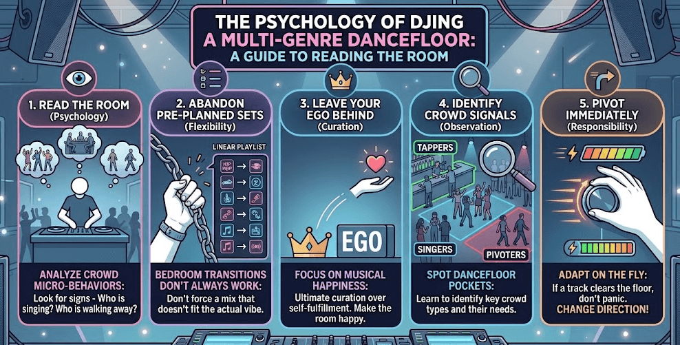
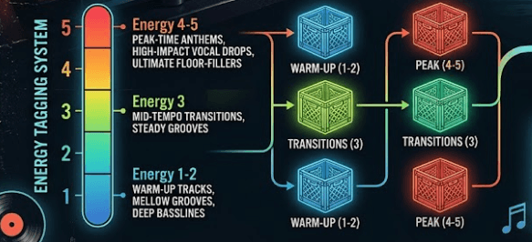

In today’s demanding nightlife market, mastering open format DJing skills is essential if you want to break out of single-genre limitations and secure premium bookings. You need to be robust and adaptable as a DJ, to open your doors to a wider range of monetization opportunities and events.
Open Format DJing: What You’ll Learn
- The psychology of reading a multi-genre crowd and timing your transitions perfectly.
- Advanced crate organization strategies that destroy traditional genre boundaries.
- Technical mixing methods for bridging massive BPM gaps without destroying the energy of the room.
- How to leverage modern AI tools like PulseDJ to eliminate track selection anxiety mid-set.
Never Drawing a Blank: The Ultimate Co-Pilot
Before we dive into technical workflows, let’s address the elephant in the DJ booth: selection paralysis. When you have access to every genre imaginable, your brain can easily freeze up during a live transition.
We have the solution: PulseDJ acts as an automated AI co-pilot that runs quietly alongside industry-standard software like Serato, Rekordbox, Virtual DJ, and Traktor. By reading your playing history safely on disk, it suggests creative next tracks in real time without any risk of crashing your setup.

If you want to instantly eliminate the stress of track selection, head over to download the PulseDJ app for free now.
How to Survive as a Multi-Format DJ
Here are some quick tips to help you succeed as an open-format DJ.
- Curate your Library: Let go of self-indulgence. Your primary responsibility is the musical happiness of the entire room, not just your own tastes.
- Ditch Pre-Planned Sets: Forcing a bedroom-practiced playlist on a live crowd is a massive mistake. What works perfectly in theory might clear a room in reality if it doesn't match the vibe.
- Observe Crowd Behaviors: Reading the room means paying attention to the small details. Notice who is tapping their feet at the bar, who is singing along, and who walks away when a specific style drops.
- Don't Panic: If a track clears the floor, don't freeze and never blame the crowd. Adapt and change direction immediately.
- Leave Your Ego at the Door: Your personal pride should never dictate the set. Always let the energy and the needs of the room guide the music.
The Psychology of a Multi-Genre Dancefloor

As someone who has spent over a decade behind the decks, navigating a room where different pockets of people want entirely different music can be terrifying. In a purist club environment, you have the luxury of building a hypnotic vibe over hours within a tight tempo range. In an open format environment, that luxury disappears. You are responsible for the musical happiness of an entire room, which means your mindset must shift from self-indulgence to ultimate curation.
Reading the Room and Leaving Your Ego Behind
The biggest mistake I see upcoming DJs make when attempting an open format set is forcing a pre-planned playlist. You might have found a brilliant transition from a classic 90s hip-hop track into a modern tech-house record in your bedroom, but if the dancefloor is packed with people who want to sing along to throwbacks, your house transition is going to clear the room.
Reading the room means observing the micro-behaviors of your crowd. Look at who is tapping their feet at the bar, who is singing along to the lyrics, and who walks away when a specific style drops. If a track clears the floor, do not panic, and don't blame the crowd. Pivot immediately. Your ego should never dictate the music; the energy of the room should.
Throwing Out Feeler Tracks
When I am unsure where a crowd wants to go, I utilize feeler tracks. A feeler track is a highly recognizable song that bridges two distinct styles or eras. For instance, playing a well-known pop edit that features a heavy reggaeton baseline allows you to test two elements simultaneously: do they respond more to the mainstream pop vocal or the rhythmic Latin groove? Based on how the floor shifts, you can confidently choose your next three or four records.
Pro-Tip: If your feeler track lands perfectly but you aren't sure how to build a full multi-genre segment out of it, tools like PulseDJ can save you mid-set. Pulse analyzes the last three tracks you've played to recommend immediate, real-time follow-ups tailored to that exact energy.
Crates and Curation: Organizing a Massive Library

If you have 50,000 songs scattered across your laptop without a clear system, you are going to freeze up during a live gig. Open format success depends entirely on how quickly you can recall the perfect track in a split second.
Tagging by Energy Level Instead of Rigid Genres
Traditional genre labels like Hip-Hop, House, or Rock are too rigid for a dynamic multi-genre workflow. Instead, I heavily rely on a 1-to-5 star energy tagging system within my software library.
- Energy 1-2: Warm-up tracks, mellow grooves, deep basslines, and background vibes.
- Energy 3: Mid-tempo transitions, steady grooves, track variants that keep people moving without peaking.
- Energy 4-5: Peak-time anthems, high-impact vocal drops, and ultimate floor-fillers.
By organizing crates into energy brackets, you can jump from an Energy 4 rap song straight into an Energy 4 pop track seamlessly, ensuring that the momentum remains unbroken even if the sonic aesthetic shifts completely.
Smart Playlists and Multi-App Workflows
Take advantage of smart playlists or intelligent crates in software like Serato or Rekordbox. Set up rules that automatically group tracks added in the last month that sit between 100 and 115 BPM with an energy rating of 4 or higher. This keeps your freshest ammunition readily accessible without requiring hours of manual sorting before every weekend performance.
Technical Workflows for Drastic Tempo Shifts
When you are playing an open format set, you will constantly face the challenge of shifting your tempo safely. Jumping from a 70 BPM R&B ballad to a 130 BPM house track requires technical precision so it doesn't sound like a trainwreck.
Overcoming the BPM Barrier
You cannot rely on standard long, blended transitions when jumping large tempo gaps. If you stretch a track's pitch fader beyond its natural limits, the audio artifacting will sound jarring to the crowd. Instead, you need a diverse toolkit of transition methods. Utilizing structural points in a track-such as a sudden breakdown, an acapella intro, or a dramatic key change-gives you a natural anchor to drop a completely different tempo on the downbeat.
Executing the Perfect Wordplay or Echo Transition
Two of the most dependable techniques in my arsenal are the Wordplay Transition and the Echo Out.
A wordplay transition uses a shared lyric between two completely unrelated tracks to bridge the gap. For example, if the outgoing hip-hop track ends on a prominent vocal phrase, you cut the fader and instantly drop a classic rock track that starts with that exact same lyric or phrase. The crowd's brain connects the vocal instantly, completely ignoring the fact that the tempo just changed by 30 BPM.
An echo out relies on hardware or software effects to create an artificial tail. By applying a heavy 1/2 or 3/4 beat echo effect to a vocal loop or melody on the outgoing deck, you can dramatically pull the channel fader down, leaving a rhythmic ambient tail drifting through the speakers. This resets the room's internal metronome, allowing you to drop your new track at any BPM on the next clean downbeat.
Technical Transition Strategies
To help you visualize how to deploy these techniques mid-set, here is a quick-reference breakdown of essential transition strategies:
Technique Name
Target BPM Shift
Best Structural Position
Crowd Impact
The Hard Cut
Minimal to Moderate (+/- 5 BPM)
On the exact 1-beat of a new verse or chorus
Immediate energy injection; highly noticeable
Wordplay Mix
Infinite (Any BPM gap)
During an acapella or prominent vocal hook
High surprise factor; creates instant singalongs
Echo Out Reset
Infinite (Any BPM gap)
At the climax of a build-up or end of a phrase
Clean palette cleanser; resets room expectations
Transition Track
Massive (e.g., 100 to 128 BPM)
Throughout the intro and build-up sections
Smooth, progressive acceleration or deceleration
Harmonic Mixing: The Secret Weapon for Smooth Multi-Genre Sets
Just because you are bouncing between different decades or musical styles doesn't mean your transitions should sound dissonant. Harmonic mixing is the practice of transitioning between tracks that are in identical or musically compatible keys. When you match keys, melodies blend effortlessly, mashups can be performed completely live on the fly, and your mixes sound fundamentally polished.
Struggling to calculate key compatibility on the fly? This is another common performance bottleneck. PulseDJ solves this natively by displaying Camelot keys clearly and automatically highlighting harmonically perfect track matches in a vibrant green bar, allowing you to execute flawless harmonic blends instantly.
Master Open Format DJing with PulseDJ
PulseDJ is the perfect companion for open format DJing. Executing an unforgettable multi-genre performance requires deep musical knowledge, strategic library management, and absolute technical agility. PulseDJ helps you to navigate your library and find chart-topping tunes with ease.
If you want to ensure you never experience another creative block mid-set, give yourself an edge behind the decks. Download PulseDJ free now .
‹ The Future of Crate Digging: How DJs Use AI to Discover Music